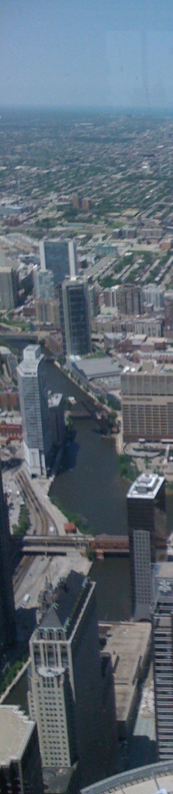

| Rolf
Moeckel |
||||||||||||||||||||||||||||||||||
|  |
Research | Bio | Teaching | Publications | Contact | |||||||||||||||||||||||||||||
| During
the Spring Semester 2015, I co-teach together with Dr.
Gerrit Knaap a class on Research Design (URSP 805). The
purpose of the course was to help to design, conduct,
publish, defend and present quality research in planning and
planning-related fields. This class is mandatory for PhD
students in Urban and Regional Planning and Design at the
University of Maryland. I co-taught a similar class in Spring 2014. Curriculum
During the Fall semester 2014, I co-taught a class on transportation planning with Dr. Hiro Iseki (URSP 688). In particular, I focused on the introduction of travel demand modeling, including 4-step models, activity-based models, land-use models and freight models. In addition, I am advising Theses and Independent Studies for students interested in urban and regional analyses and/or modeling. |
||||||||||||||||||||||||||||||||||
© Copyright 2015
Rolf Moeckel